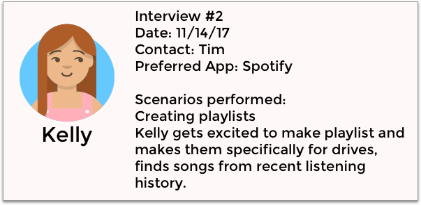
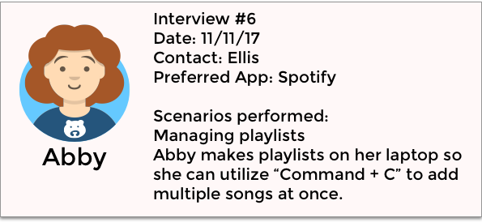
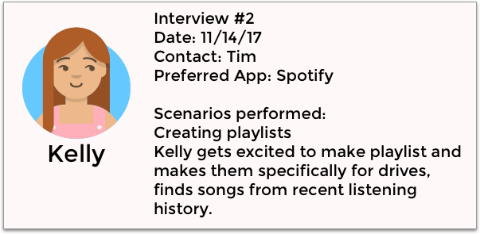
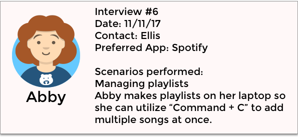
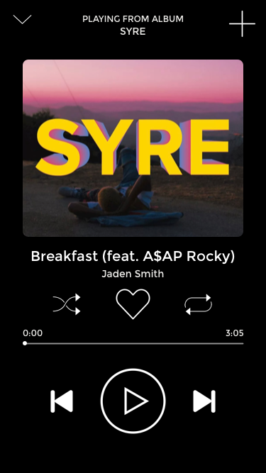
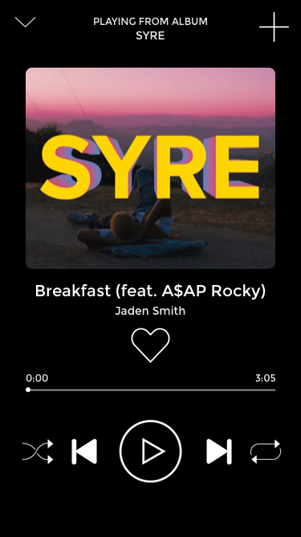
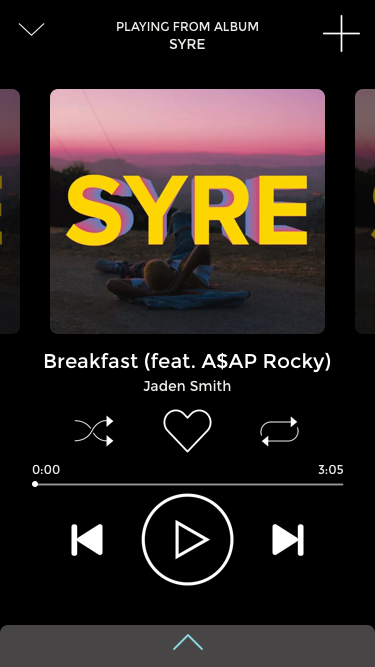

A music streaming service for drivers
Keep your eyes on the road!
The harsh reality for young adults is that at one point in time, we have taken our eyes off the road in order to browse through our music playlists on a cell phone screen. This inevitable scenario inspired us to reevaluate the usability of Spotify. This reevaluation was geared towards improving driver usability/visibility, but not at the cost of regular usability.
- December 2017
- UX/UI Research and Design
- Cross-functional team of 4
- Invison Prototype
The Scope
Create an improved prototype of a music streaming app for college students. Our system needed to support the construction and management of playlists organized for different activities such as parties, exercise, and get togethers. The key concern was how to support browsing for music when choosing what to include in playlists, and the tasks you think need to be supported to use playlists and manage them.
Soloreiur qui commolu ptatemp dolupta oreprerum tibusam emnis et consent accullignis. Laceaque quiae sitiorem rest non restibusaes es tumquam core posae voloris remped modis doloreiur qui commolu dolupta oreprerum et consent.
Observations and Interviews
By asking interviewees to make us a playlist while utilizing the "think aloud" method, we could learn the reasoning behind each of their actions and behaviours. We observed them using multiple different music apps on both desktop and mobile. Some of the things we asked were:
- Where do you listen to music?
- What do you use to listen to music?Spotify, Apple Music, Tidal, Amazon Music, Soundcloud, etc.
- What is your primary/main music app?
- How often do you use the music app?
- Do you switch off between music apps? Why?
- Think about the last few times you created a playlist.
- What did you like about the process of creating a playlist?
- Did you dislike anything about it? What was it?
- Did you run into any complications?
- How often do you make playlists? What prompts the decision to do it?
- Could you make a playlist for me? (when watching them make a playlist) Where did you learn to do it like that? How did you do it before? Why did you change?
Overall, we interviewed 9 students. Some of the responses and scenarios we learned about were:
 



Redesign and Design Space
My design focused on simplicity and ease of use while driving. Our team considered a variety of different redesigns. Our first design was focused on what we collectively thought would be the most desired redesign: displaying playing music.
Design 1: "Swiper No Swiping"
- 

We initially prototyped the song screen because users use a music app because they want to listen to a song(s). If a user listened to a song they really enjoyed, they would add that song to a playlist through the ‘currently playing’ screen; All users we interviewed noted that they found a song then added it to the playlist.
Taking this into account, Our first solution to improve driver usability and visibility was to mimic the Spotify user interface and redesign it in three different ways:
Once we sketched and prototyped these interfaces, the usability issues became clear: A user needs to press buttons.
While buttons do allow for more flexibility in terms of user interface, if a user is repeatedly distracted from the screen or isn’t looking at the screen, buttons are hard to aim for. Music apps such as Spotify and Apple Music place their main functions towards the bottom of the screen, hinting at a possible standardization of the button placement. However, in a scenario where a single missed touch could quickly redirect the user’s attention, we concluded that simply increasing button sizes and making the play button more prevalent wasn’t enough.
Implementing Swiping
- 
We concluded that the best way to solve this button pressing issue was to implement more swiping movements. Why?
Swiping decreases the amount of slips and increases the window of error. Sometimes a user will know where the button is, but will just slightly miss the button they intended to press. By implementing more swiping on the song screen and throughout the entire app, users will have less trouble.
Decision 2: Information Architecture: Organizing the Homepage

In terms of usability and aesthetics, we believed that Spotify implemented the best possible interface. Swiping left/right allows a user to further dive into a heading without endlessly scrolling down. There is a two column layout, as well as a visual signifier to swipe left. We mimicked this layout in our final prototype. What we didn’t mimic is the order in which Spotify organized the headings.
We prioritized the “Jump Back In” heading. From there, we decided to remove all headings that tailored the playlist to the specific user (based off our interviews); young adults tend to be more excited about a new album coming out than undiscovered music. When the user opened the app, they would see the following headings without scrolling down: